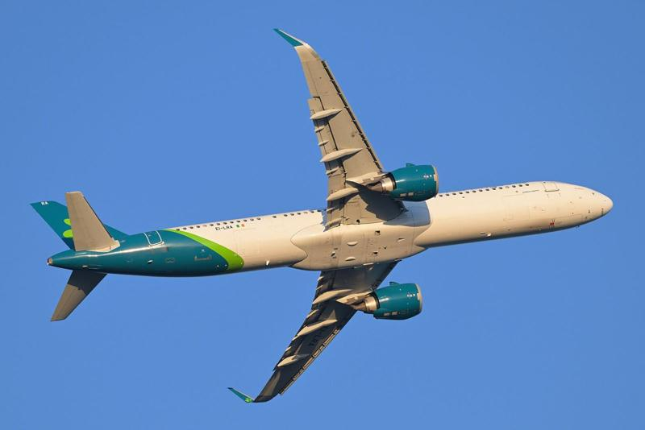

Sat May 29
Fly SFO → Dublin
Aer Lingus nonstop, 5:35 pm, lands Dublin 11:40 am Sunday. Open-jaw ticket: home from Nice on Sun Jun 13 (the Nice → SFO leg connects).
$2,038 economyRound trip for two, Google Flights · premium economy $4,573 (BA via Heathrow, mixed cabins) · business $14,057 (Aer Lingus nonstop out; cheapest business $13,066, American via Chicago)